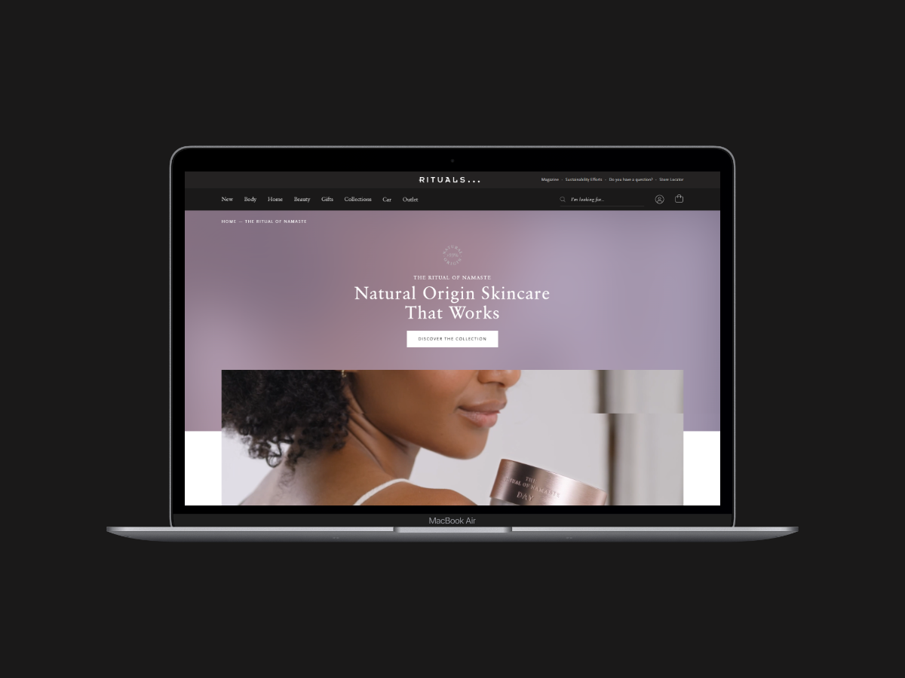

Position: UI Designer
During my time with Rituals, I played a role in shaping the digital experience for the international brand by defining the UI foundations crucial for building a scalable and cohesive design system. My work involved architecting a robust structure that supported progressing brand's global design system while ensuring consistency across platforms.
Outcome: Built the UI foundations still underpinning Rituals' global e-commerce design system, including the interactive skincare tool, same-day delivery flow, and seasonal storytelling components.

I also led and worked on various other projects. Translating design briefs into functional, high-fidelity prototypes that sought to enhance our e-commerce offerings. Some of these projects included an interactive skincare tool, a same-day delivery service, the Christmas advent calendar, a limited-edition men's skincare box set and the development of more compelling storytelling components to promote a more immersive shopping experience. I also facilitated design workshops to help streamline the design-to-development process, to foster better collaboration and drive more innovation across teams.
If you would like to know more please contact me!